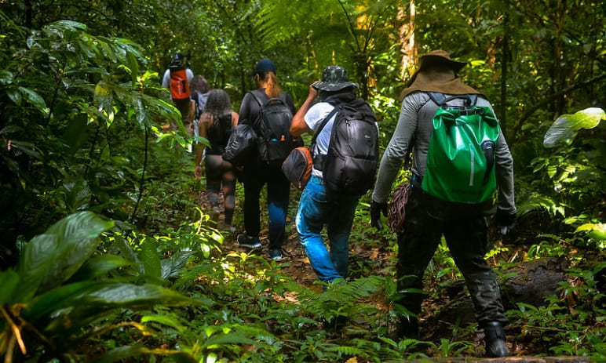

Bem-vindo ao WildFit – Seu espaço de fitness e vida selvagem!
No WildFit, acreditamos que a melhor maneira de encontrar o equilíbrio entre corpo e mente é através da
conexão com a natureza. Nossa missão é inspirar você a descobrir um estilo de vida ativo e saudável,
aproveitando o que o mundo natural tem de melhor. Desde exercícios ao ar livre e aventuras em trilhas
até práticas de bem-estar e nutrição, aqui você encontra dicas, roteiros e histórias que vão motivar sua
jornada.
Explore ideias para treinos ao ar livre, descubra receitas naturais para manter a energia e conheça
locais selvagens que proporcionam paz e adrenalina ao mesmo tempo. Prepare-se para viver o melhor dos
dois mundos – saúde e natureza – com o WildFit!
Imagens de pessoa se exercitando
